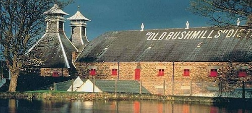

Ancient times
2000 BC
Arguably, the art of distillation was founded in ancient Mesopotamia (the modern day equivalent is an area covering parts of Iraq and Syria)
often used as a way to produce perfumes and aromatics.
100 AD
Here we find the first written record of distilling. Ancient Greek philosopher Alexander of Aphrodisias describes the process
of taking sea water and distilling it into pure drinking water. Medieval civilizations evolved their techniques over the
following centuries, although still not resulting in alcohol.
500-1000 AD
Knowledge of distillation spread to Europe along with the traveling Moors of the early first millennia.
The process is picked up by those in the Christian religion, using it to produce ingredients for various ceremonies,
and also medicines for colic, palsy and smallpox.
Medieval Era
1000-1200 AD
The origin of whiskey began over 1000 year ago when distillation made the migration from mainland Europe into Scotland
and Ireland via traveling monks. The Scottish and Irish monasteries, lacking the vineyards and grapes of the continent,
turn to fermenting grain mash, resulting in the first distillations of modern whisky.
1250
Around this time, the earliest records of alcohol distillation appear in Italy,
with it being distilled from wine. The technique was recounted by Ramon Llull (1232 – 1315).
1405
The first written record of ‘whisky’ appears in the Irish Annals of Clonmacnoise,
where is was written that the head of a clan died after “taking a surfeit [excessive amount] of aqua vitae” at Christmas.
1494
By this time, the distilling of whisky in Scotland is fully underway, as evident by a record in the Exchequer
Rolls of 1494 where King James IV of Scotland granted a large amount of malt “To Friar John Cor, by order of the king
to make aquavitae.”
1536-1541
The production of whisky shifted to the general public, after King Henry VIII of England dissolved the monasteries,
making a large number of monks independent and looking for new ways to make a living. Distillation was it.
Modern Era
1600-onwards
As the European colonists began to arrive in America, they brought with them the practice of distilling whiskey.
Many Scottish and Irish immigrants settled in their new territories, eventually beginning to distill their new types
of grains and mash.
1608
The Old Bushmills Distillery is licensed in Northern Ireland, and today holds the title of oldest licensed whiskey
distillery in the world.

1707-1725
The Acts of Union resulted in the merging of the Kingdoms of England and Scotland, creating Great Britain, and in the
following years, taxes rose dramatically. The English Malt Tax of 1725 seriously threatened the production of whisky,
and led the majority of Scottish distilleries to head underground and begin production at night, giving whisky one if
its finest nicknames, “moonshine.”
Economic effects nowadays in UK
The Scotch Whisky Association estimated that Scotland's whisky industry supported 40,000 jobs and accounted for £4.37 billion
in exports in 2017. Of that total, single malt Scotch accounted for £1.17 billion in exports, a 14% increase over 2016.[30]
The industry's contribution to the economy of the UK was estimated as £5.5 billion in 2018; the industry provided £3.8 billion
in direct GVA (gross value added) to Scotland. Whisky tourism has also become significant and accounts for £68.3 million per year.
One factor negatively affected sales, an extra 3.9% duty on spirits imposed by the UK in 2017. (The effect of the 25% increase in
tariffs imposed by the U.S. in October 2019 would not be apparent until 2020.) Nonetheless, by year-end 2017, exports had reached a record-breaking amoun